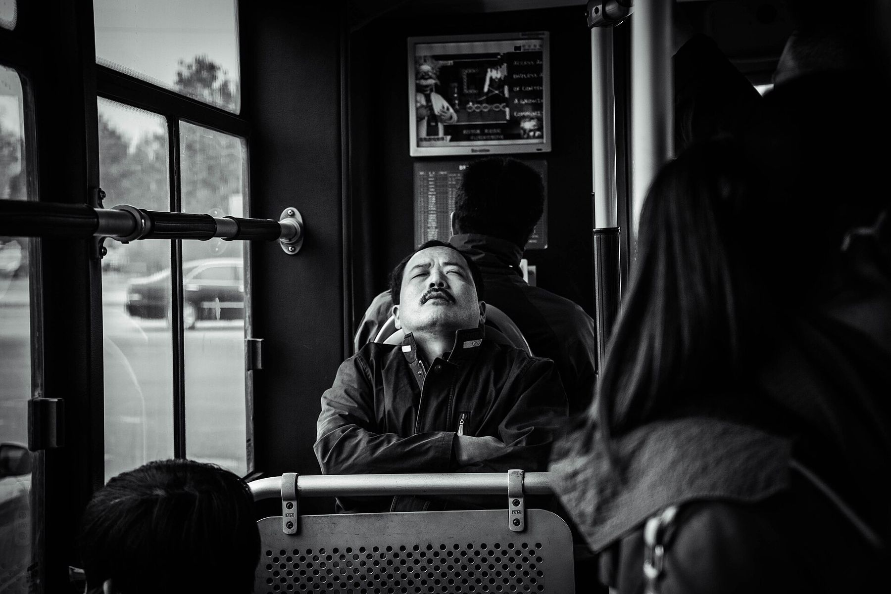
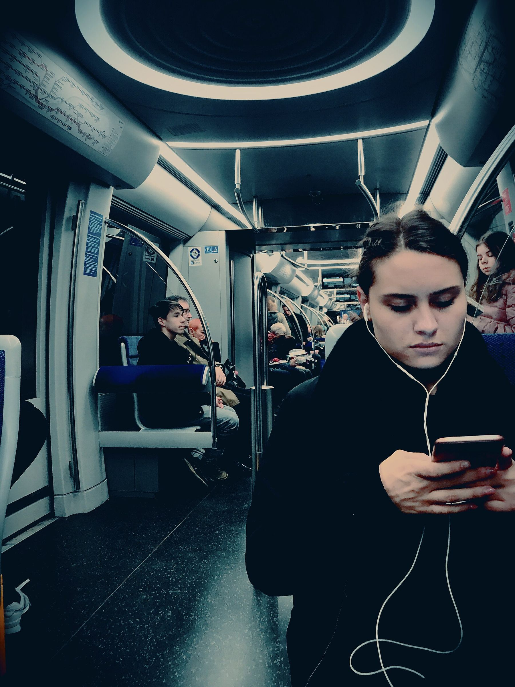
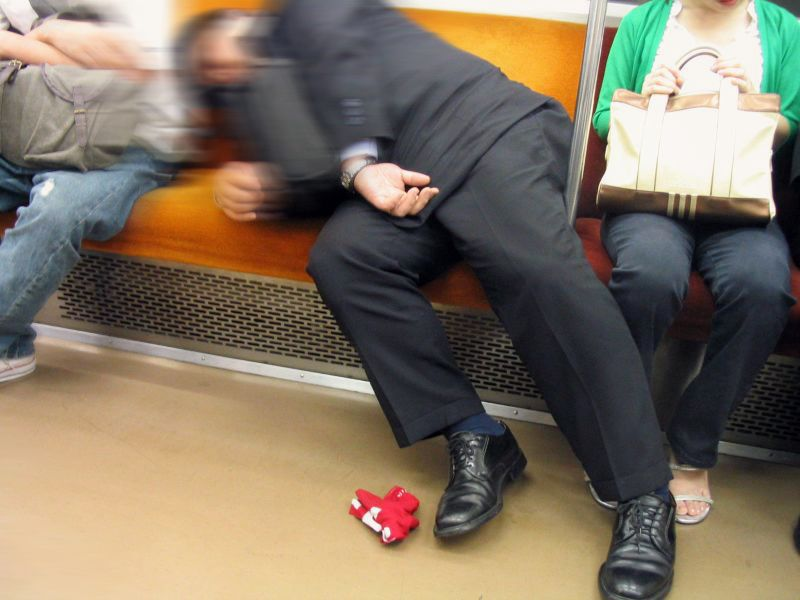
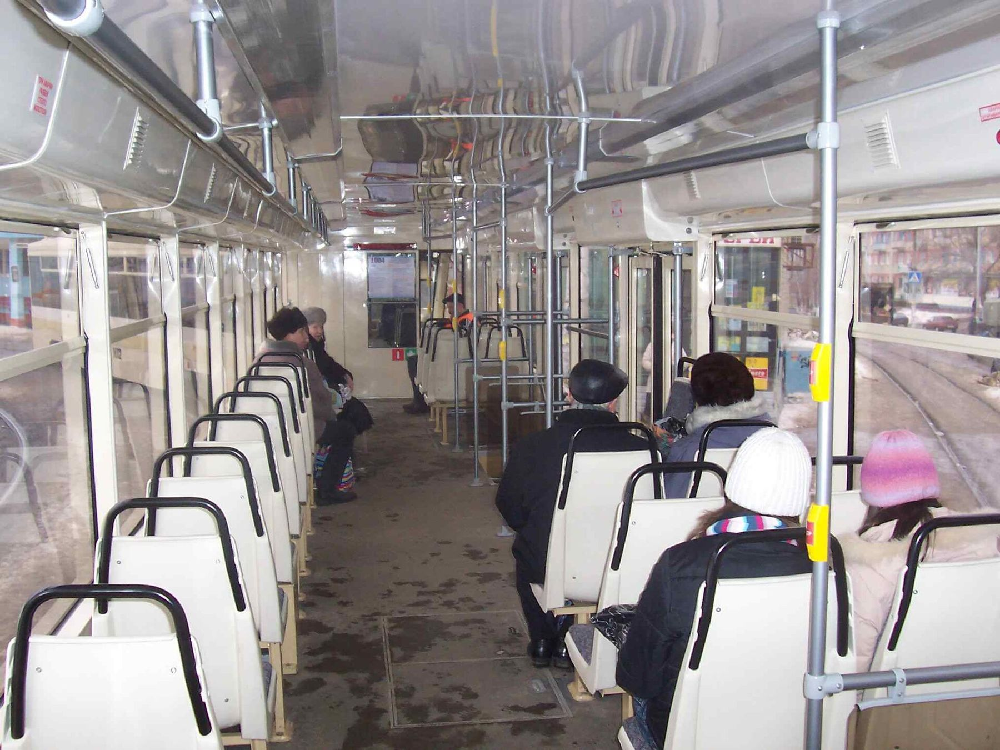
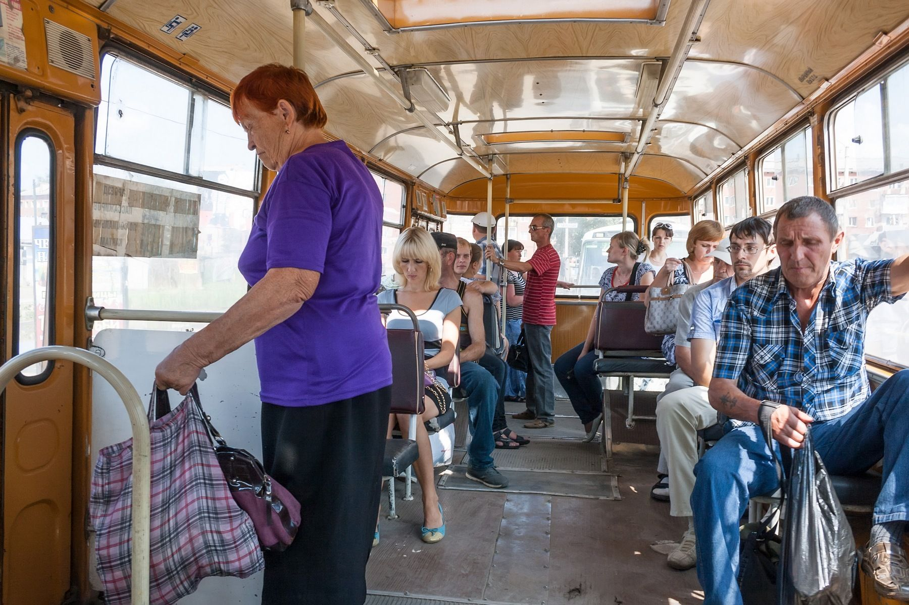
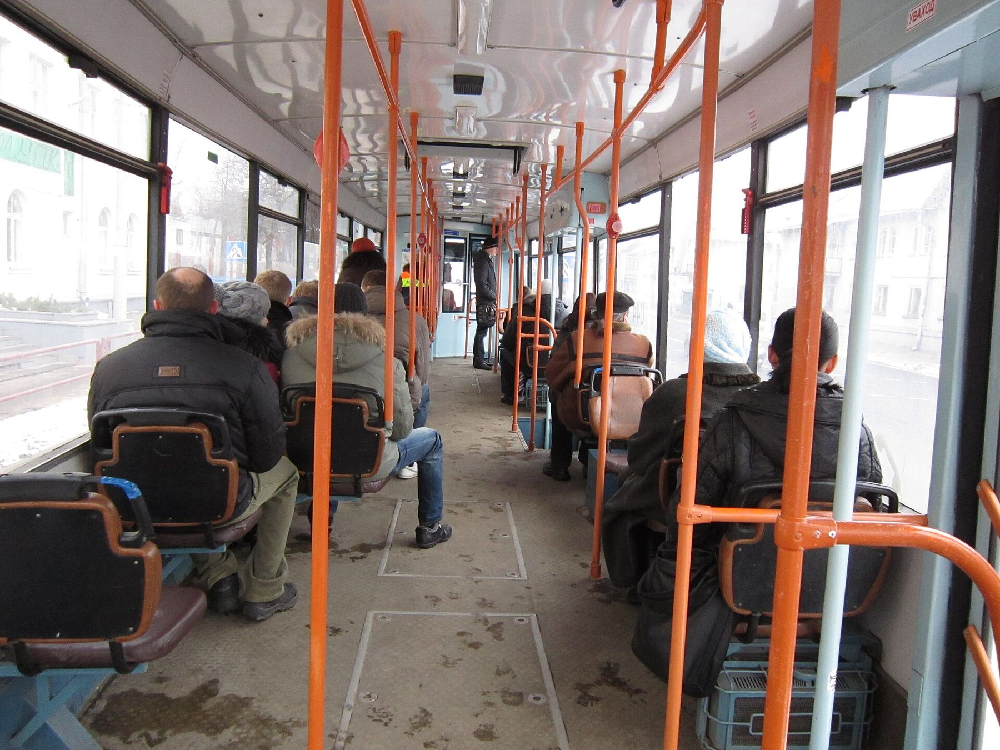
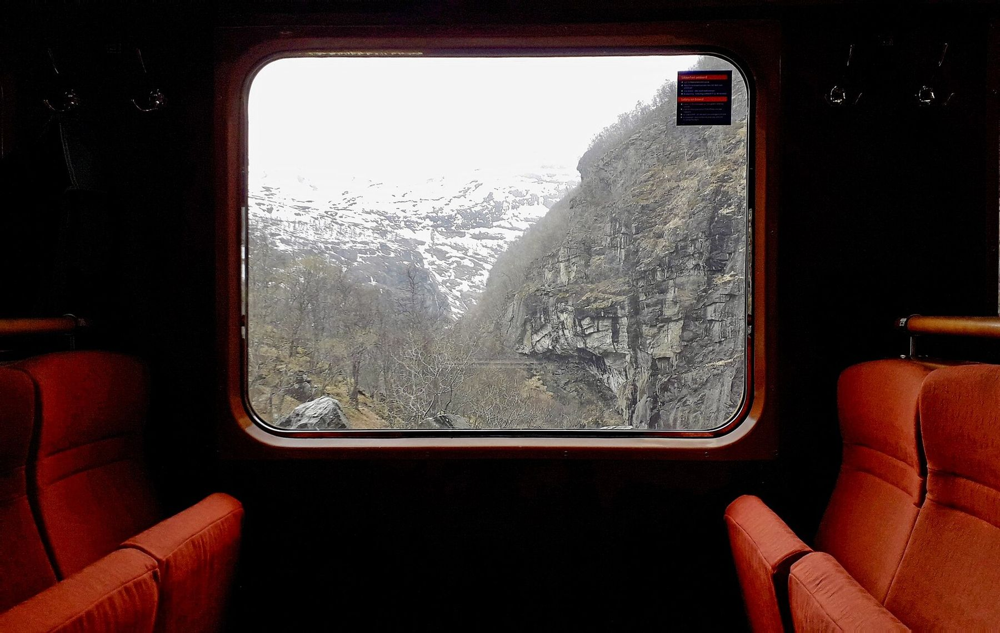

Спишь увлечённо
Утро, тепло, мерный стук колёс — и ты уже на двадцать минут дальше, чем собирался.
iOS · Android · .рф
Геобудильник разбудит тебя звуком и вибрацией прямо перед нужной остановкой — пока ты спишь, листаешь тикток или читаешь. Автобус, троллейбус, трамвай, электричка.
Первый месяц — бесплатно. Установка и использование без оплаты.
Следующая остановка
Парк Победы
через 2 остановки · 4 мин
Ты не один такой. Почти каждый, кто ездит каждый день, хоть раз проезжал свою остановку.

Утро, тепло, мерный стук колёс — и ты уже на двадцать минут дальше, чем собирался.

Наушники, плейлист, любимый сериал. Мир снаружи становится неважен — вместе с названиями остановок.
Ещё глава — и ты понимаешь, что уже давно едешь в обратную сторону.

Смотришь в окно и думаешь о своём. Хорошо. Только остановка уже проехала.
Три шага
Найди на карте точку, где тебе выходить. Или просто сохрани её один раз — она останется в любимых.
Геобудильник следит за твоим положением и срабатывает, когда до остановки остаётся заданное расстояние.
Спи, читай, смотри. Телефон разбудит тебя звуком и вибрацией — вовремя, чтобы встать и выйти.
Тебе больше не нужно отвлекаться и контролировать, где ты едешь. Это делает приложение.
Двойное оповещение, которое сложно не заметить: сигнал будит, вибрация подстраховывает в шумном вагоне.
Работает по геолокации, а не по расписанию: приложение понимает, что ты подъезжаешь, когда ты действительно подъезжаешь.
Не нужно держать экран включённым. Приложение следит за маршрутом, пока телефон лежит в кармане.
Дом, работа, дача, остановка у бабушки — сохраняй адреса и запускай будильник одним касанием.
Хочешь встать заранее — поставь радиус больше. Едешь в незнакомом городе — поставь меньше и выходи точно.
Не надо каждые две минуты смотреть в карту. Один раз настроил — и забыл до самого сигнала.
Наземный транспорт и электрички — там, где остановки легко проехать и легко прослушать.
Городской и пригородный
Тихий ход, мягкие остановки
Стук колёс усыпляет лучше всего
Долгие перегоны, дальние станции




Освободи внимание. Не контролируй маршрут — контролируй только то, чем занят прямо сейчас. Будь на 100% в моменте: с книгой, с музыкой, с любимым сериалом или с закрытыми глазами.
Зацени новый уровень концентрации.
Старт
0 ₽/ первый месяц
Условия продления показываются в приложении до оплаты.
Да. Установка и использование в течение первого месяца — бесплатно, без оплаты и без ввода карты на старте. Дальше условия продления показываются прямо в приложении.
Оповещение двойное: громкий звук плюс вибрация. Радиус срабатывания настраивается — можно поставить его больше, чтобы сигнал начался за пару остановок до выхода и у тебя было время проснуться.
Оповещение строится на геолокации, поэтому в метро и в пригороде приложение продолжает следить за твоим положением. Карту и новые адреса лучше загрузить заранее — дома или на Wi-Fi.
Приложение использует геолокацию только пока будильник активен, и отключает слежение сразу после срабатывания. Держать его включённым весь день не нужно.
Геобудильник есть и на iOS, и на Android. Скачай его в App Store или Google Play — версия для твоей системы найдётся сама.
Да. Автобус, троллейбус, трамвай, пригородный поезд — везде, где есть остановка или станция с координатами. Особенно полезно на длинных перегонах, где легко потерять счёт станциям.
Скачай Геобудильник — и перестань считать остановки в уме.
Первый месяц бесплатно · iOS и Android